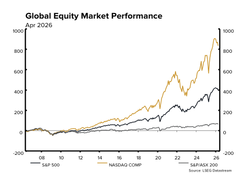
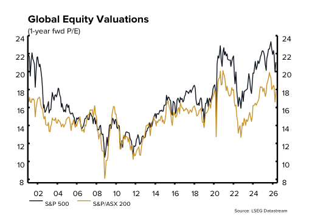
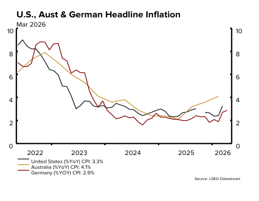
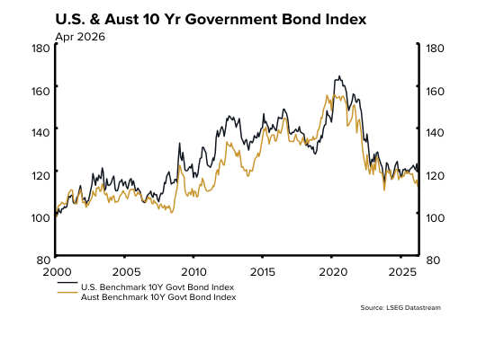
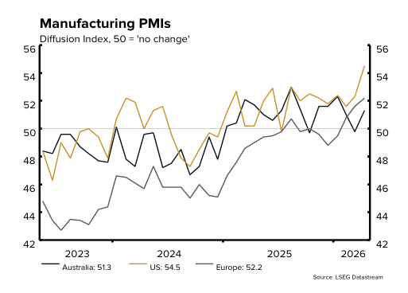
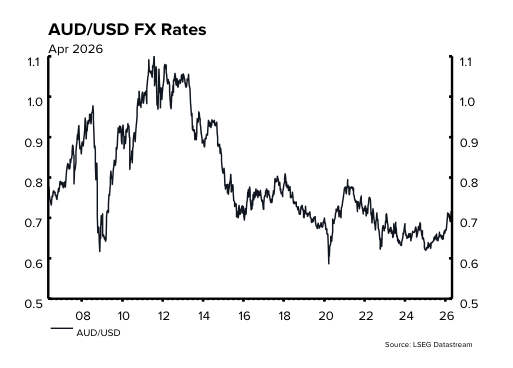

Global investment markets rose in April following the deterioration in risk sentiment experienced during March. Easing tensions between the U.S. and Iran, alongside resilient corporate earnings and more stable policy conditions, improved the backdrop for global equity markets.
The U.S. Federal Reserve held rates unchanged, although the decision featured an unusually high degree of dissent, highlighting the challenge policymakers face amid persistent inflationary pressures. Global bond markets were broadly steady, with yields moving modestly higher following the volatility experienced in March.
U.S. first quarter earnings season commenced in April, with 84% of S&P 500 companies reporting positive earnings per share surprises. U.S. equities responded strongly, with the S&P 500 and Nasdaq Composite indices increasing 10.4% and 15.3% respectively.
Outside the U.S., European equities advanced, with the Euro Stoxx 500 Index rising 4.8%. Japan was a standout performer, with the Nikkei 225 Index surging 16.1%, supported by strong foreign inflows and continued strength in AI-linked semiconductor companies.
In Australia, the S&P/ASX 200 Accumulation Index lagged global peers, increasing 2.2%. Gains were tempered later in the month on concerns around higher inflation (reinforced by higher energy prices) and expectations of further monetary policy tightening by the Reserve Bank of Australia.
Commodity markets delivered mixed results amid shifting global dynamics. Precious metals retreated – Silver (USD) declined 1.9% and Gold (USD) fell 1.1%. Energy prices diverged, with West Texas Intermediate rising for a fourth consecutive month, up 3.6%, while Brent crude declined 3.7%, reflecting differing regional supply conditions across U.S. and global oil markets. The Australian dollar appreciated 4.4% against the USD in April to 72.0¢ (up from 69.0¢ in March).
Australia
- The Australian equity market, as measured by the S&P/ASX 200 Accumulation Index, increased 2.2% in April. Over the month, Information Technology was the best performing sector (+13.3%), followed by Real Estate (+8.1%) and Materials (+4.3%). Healthcare (‑8.7%) and Consumer Staples (‑4.1%) lagged.
- Australian bonds delivered minor gains over the month, with the Bloomberg AusBond Composite Index (AUD) increasing 0.1%.
- Australian CPI was 4.6% over the 12-months to March (up from 3.7% in February). The most significant price rises were in Transport (+8.9%), Housing (+6.5%), and Food and non-alcoholic beverages (+3.1%). Trimmed mean inflation (ex-volatile items) was unchanged at 3.3%.
- The seasonally-adjusted unemployment rate remained at 4.3% in March. Meanwhile, the Westpac- Melbourne Institute Unemployment Expectations Index rose 9.7% to 147.8 in April (a higher index means more consumers expect unemployment to rise over the year ahead).
- The Westpac-Melbourne Institute Consumer Sentiment Index fell sharply in April, declining 12.5% to 80.1, returning to its weakest levels since the COVID period. The deterioration highlighted renewed cost‑of‑living pressures, driven largely by a sharp spike in fuel prices and the impact of higher interest rates on household finances.
- Nationally, residential property prices fell in April, decreasing by 0.1% as measured by the PropTrack Home Price Index. Hobart climbed 0.3%, followed by Brisbane, Adelaide and Perth (+0.2%). Despite this decline, national residential property prices remain 8.5% higher over 12- months.
International
- U.S. equities delivered strong gains in April, with the S&P 500 Index rising 10.4% and the tech-heavy Nasdaq Composite Index advancing 15.3%. Sector performance within the S&P 500 Index was led by Communication Services (+18.4%), followed by Information Technology (+17.4%) and Consumer Discretionary (+11.7%). Energy underperformed (-3.5%) and Health Care declined (-0.6%).
- U.S. first-quarter earnings season was 63% complete by the end of April, with results broadly positive. According to FactSet, 84% of S&P 500 companies reported positive earnings-per-share surprises, while the blended (year-over-year) earnings growth rate of 27.1% is on track to represent the strongest quarterly outcome since Q4 2021.
- Headline U.S. CPI increased 3.3% in March (up from 2.4% in February). Core CPI, (which excludes volatile food and energy) was below estimates, increasing just 0.2% for the month and 2.6% in the 12-months to March.
- The Federal Reserve voted to hold policy rates unchanged at its April meeting, maintaining the target range at 3.50% - 3.75%, following an 8-4 split decision within the Federal Open Market Committee. The elevated level of dissent highlighted increasing differences within the Committee as policymakers contend with persistent inflation risks.
- U.S. 10-year bonds rose modestly, up 5 basis points in April to 4.37%. The Bloomberg Global- Aggregate TR Index (AUD) also increased, up 0.3% over the month.
- The Nikkei 225 Index rose sharply in April, gaining 16.1% over the month, largely reversing March’s sharp losses and taking 1-year gains to 64.5%. The Euro Stoxx 600 Index increased 4.8%, while the FTSE 100 Index advanced 2.0%.
- Emerging market equities posted a strong performance in April, with the MSCI Emerging Markets Index (USD) rising 14.5%. South Korea’s KOSPI Index was a notable standout, gaining 30.6% driven by strong performance in AI-linked semiconductor stocks.
- The USD Index (the value of the U.S. dollar against a basket of widely recognised, publicly traded currencies) fell 1.9% in April. The Australian dollar closed the month 4.4% higher against the USD, at 72.0¢ (versus 69.0¢ in March).
Commodities
- Commodity markets were mixed in April. Brent Crude declined 3.7% to US$114.01/bbl, while West Texas Intermediate Crude rose 3.6% to US$105.07/bbl, highlighting divergence between global and U.S. oil market dynamics. Copper ($/t) climbed 5.3% and Iron Ore ($/t) rose 1.2%. Precious metals reversed course mid-month to end April lower, with Silver falling 1.9% to US$73.75/oz and Gold declining 1.1% to US$4,617/oz.
Global Markets – 30 April 2026
| Equities | CYTD | 1 Month | 3 Months | 1 Year | 3 Years (p.a.) |
5 Years (p.a.) |
|---|---|---|---|---|---|---|
| S&P /ASX 200 Accumulation Index (AUD) | 0.5% | 2.2% | -1.2% | 10.1% | 9.7% | 8.4% |
| S&P/ASX Small Ordinaries Index (AUD) | -8.8% | 3.3% | -11.3% | 12.5% | 5.8% | 0.9% |
| S&P 500 Index (USD) | 5.3% | 10.4% | 3.9% | 29.4% | 20.0% | 11.5% |
| Nasdaq Composite Index (USD) | 7.1% | 15.3% | 6.1% | 42.7% | 26.7% | 12.3% |
| Russell 3000 Index (USD) | 5.4% | 10.1% | 3.9% | 29.4% | 19.7% | 10.3% |
| FTSE 100 Index (GBP) | 4.5% | 2.0% | 1.5% | 22.2% | 9.7% | 8.3% |
| Euro Stoxx 600 (EUR) | 3.2% | 4.8% | 0.0% | 15.9% | 9.4% | 6.9% |
| Nikkei 225 (JPY) | 17.8% | 16.1% | 11.2% | 64.5% | 27.1% | 15.5% |
| Hang Seng (HKD) | 0.6% | 4.0% | -5.9% | 16.5% | 9.0% | -2.1% |
| MSCI Emerging Markets Index (USD) | 13.9% | 14.5% | 4.7% | 43.8% | 17.9% | 3.5% |
| MSCI World Ex Australia (AUD) | -2.1% | 4.4% | 0.7% | 15.1% | 16.5% | 13.0% |
| Bonds | ||||||
| Bloomberg AusBond Composite Index (AUD) | -0.3% | 0.1% | -0.5% | -0.1% | 2.0% | 0.0% |
| Bloomberg Global Agg Bond Index (AUD) | 0.1% | 0.3% | -0.1% | 2.4% | 3.1% | -0.1% |
| Currency | ||||||
| AUD/JPY | 7.9% | 3.0% | 4.6% | 23.1% | 7.7% | 6.0% |
| AUD/USD | 7.9% | 4.4% | 3.4% | 12.5% | 2.9% | -1.4% |
Source: Bloomberg 30 April 2026 (All returns are in local currency terms.)






Please contact your Advisor for further details or click here for a copy of our latest Quarterly Outlook.
Please note: Moving forward, Mutual Trust will issue these regular market reviews on quarterly basis. The next market review will be published in July 2026.